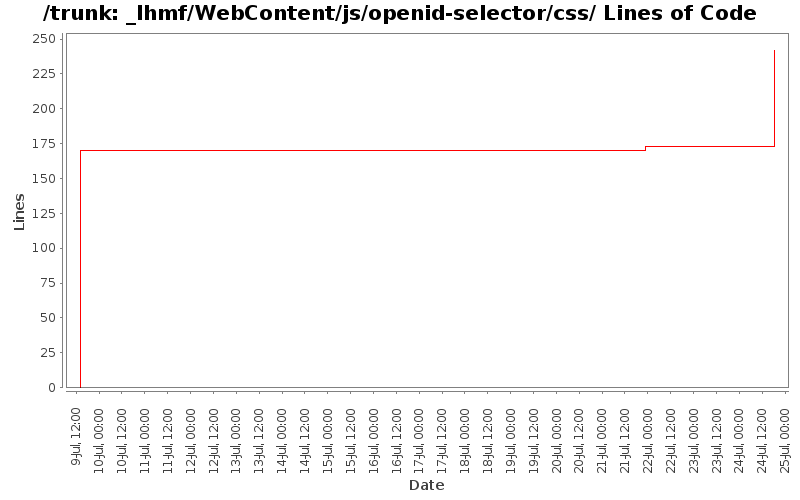

[root]/_lhmf/WebContent/js/openid-selector/css

| Author | Changes | Lines of Code | Lines per Change |
|---|---|---|---|
| Totals | 4 (100.0%) | 242 (100.0%) | 60.5 |
| l.moretto88@gmail.com | 3 (75.0%) | 239 (98.8%) | 79.6 |
| jyxpowa@gmail.com | 1 (25.0%) | 3 (1.2%) | 3.0 |
69 lines of code changed in 1 file:
Creato pagina Login per Mobile
3 lines of code changed in 1 file:
migliorie pagina di login
170 lines of code changed in 2 files: